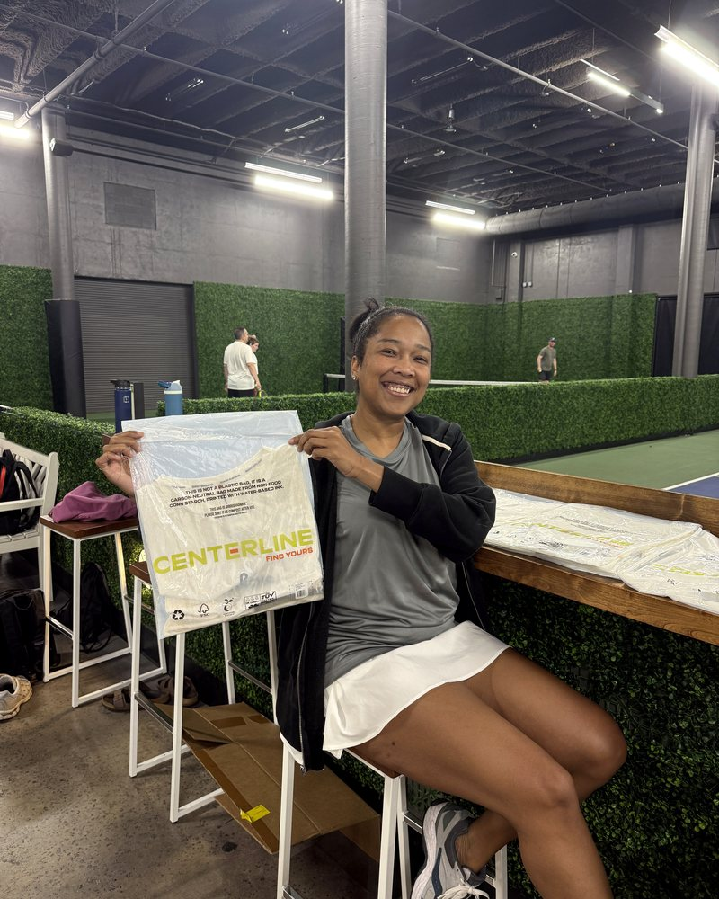
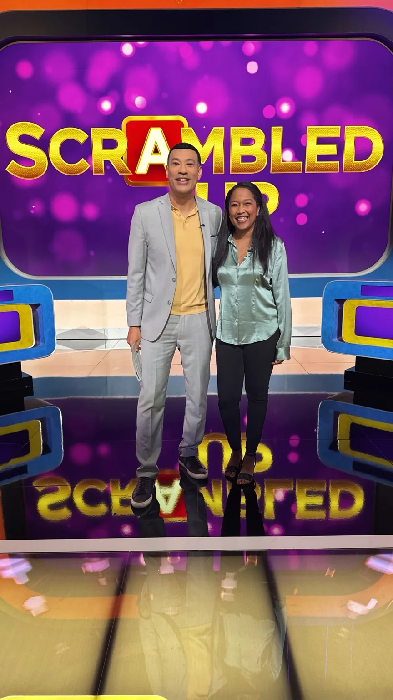

Host the room
Hosting, moderation, interviews, audience command and live brand experiences.

Season Zero / LBTV · Casting + Media
Creator + Host
Same Lauren. Different door. Television, branded storytelling, live rooms, explainers and field work.
01 / QUICK READ / CAST HER FOR
A producer should know the assignment before the coffee gets cold. These are the clearest ways to use Lauren on a project.
Hosting, moderation, interviews, audience command and live brand experiences.
Creator-led branded content, product narrative, personality and editorial voice.
On-camera explainers that translate products, categories and complex material without sanding off the personality.
Activations, event storytelling, interviews and content built inside the actual environment.
02 / RANGE / SAME LAUREN · DIFFERENT DOOR
The assignment changes. The person does not disappear. Creator, personality, live, television and field presence all belong in the same casting read.



03 / SELECTED FILES / PUBLIC
Four public-safe examples, each with a deeper file behind it. Fast producer read here. Context, media and source notes one click deeper.

Television Game Show Contestant · third-party production proof.
Creator / on-camera explainer · Lauren-led product and category explanation.

Concept / voice / creator / editor / product storytelling.

Field activation proof inside a real venue, with sponsor and participant context visible.
Self / Trap Pilates Participant · Season 2, Episode 7.
Selected promotional content later supported by paid amplification. Watch public promo ↗
Creator / edit proof. Lauren is not the on-camera subject.

04 / BEHIND THE CAMERA / OPERATING DEPTH
Spelman College alumna with strategic-communications, public-health, behavior-change and financial-education depth behind the camera work. Lauren learns the subject, finds the useful human angle, translates it for an audience and still hits the cue.
Healthcare professionals reached through AHRQ TeamSTEPPS facilitation and training.
Financial-education community supported through curriculum and video modules.
Complex material translated into useful language, live experiences and camera-ready stories.
05 / BOOKING / DIRECT
Atlanta-based. Available for remote work, reasonable Southeast self-drive opportunities and select travel based on compensation and logistics.